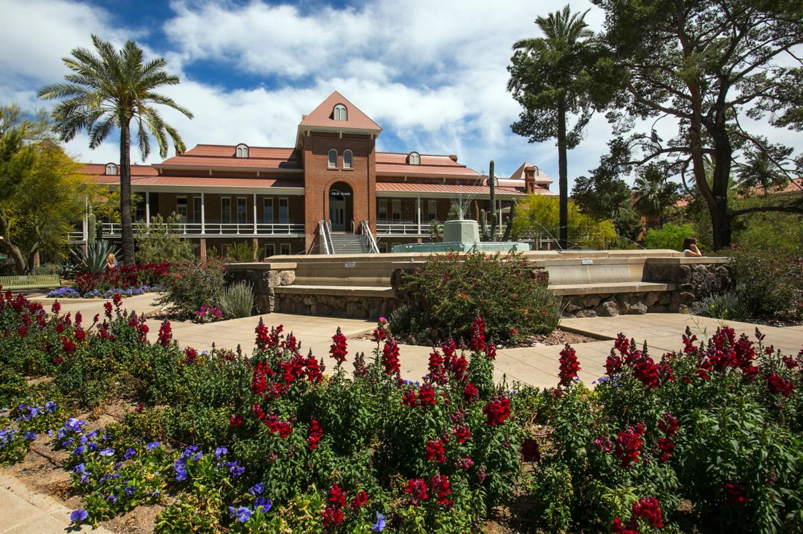
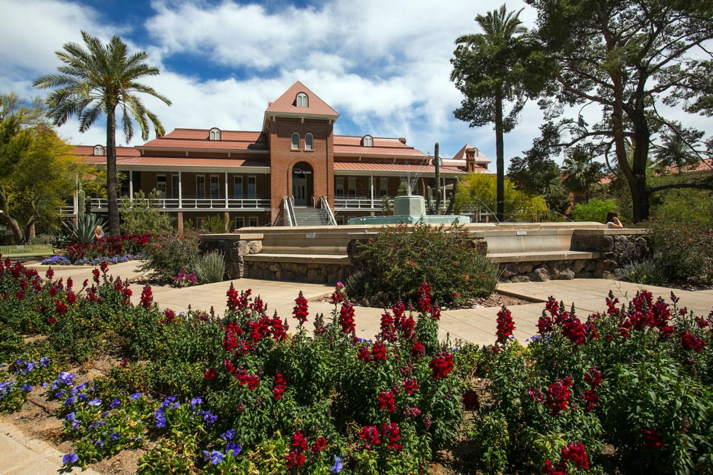
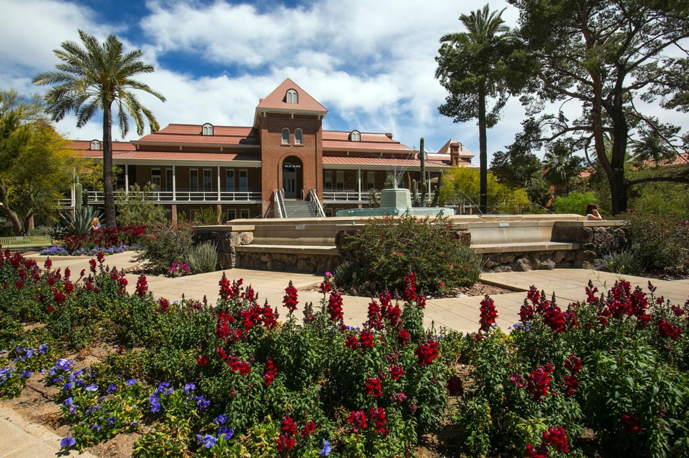
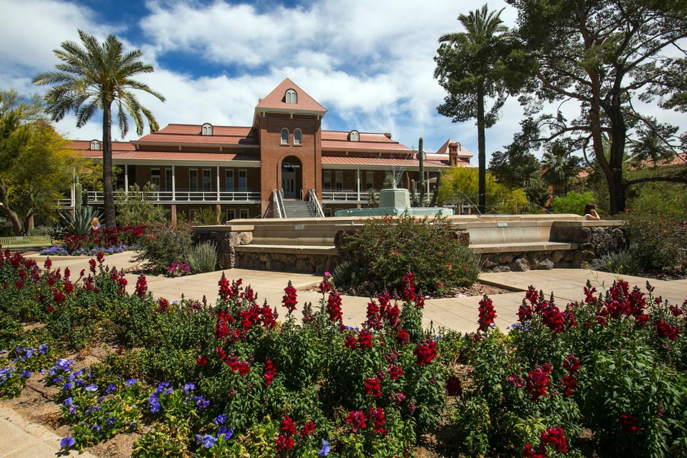

 

Welcome to Tucson, Arizona, where vibrant culture meets stunning natural beauty! Nestled in the heart of the Sonoran Desert, Tucson offers an unforgettable experience for visitors seeking an escape like no other. Immerse yourself in the rich history and explore the enchanting adobe architecture of the Old Pueblo, while embracing the warmth of its welcoming community. With over 300 days of sunshine each year, Tucson is a haven for outdoor enthusiasts, boasting breathtaking landscapes, including the iconic Saguaro National Park and the majestic Catalina Mountains. Whether you're hiking through picturesque trails, indulging in delicious Southwestern cuisine, or stargazing at one of the world's premier observatories, Tucson is a destination that will captivate your soul and leave you yearning for more. Prepare to awaken your senses in Tucson, where a vibrant culinary scene tantalizes taste buds with a fusion of flavors. From traditional Mexican street food to cutting-edge farm-to-table restaurants, Tucson is a food lover's paradise. Sample the bold spices and vibrant colors of authentic Sonoran cuisine, or savor a deliciously crafted craft beer from one of Tucson's local breweries. Don't forget to explore the bustling farmers' markets, overflowing with farm-fresh produce, handcrafted goods, and lively music. With a thriving arts community, Tucson also offers an array of galleries, museums, and theaters that showcase the city's creative spirit. For adventure seekers, Tucson is a playground of thrilling activities. Immerse yourself in the wonders of the desert as you go off-roading through rugged landscapes, or embark on an exhilarating hot air balloon ride to witness the breathtaking vistas from above. Nature enthusiasts will be captivated by the diverse wildlife and stunning geological formations found in the region. Explore the hidden wonders of Kartchner Caverns, go birdwatching at the Patagonia-Sonoita Creek Preserve, or test your limits while rock climbing in the scenic Santa Catalina Mountains. Tucson's outdoor playground is sure to provide unforgettable experiences for every adventurer. Come and discover the magic of Tucson, Arizona. With its vibrant culture, awe-inspiring landscapes, and endless opportunities for exploration, Tucson promises an experience that will leave you with memories to last a lifetime. Soak up the vibrant colors of a mesmerizing desert sunset, feel the energy of a city steeped in history, and find yourself in awe of the natural wonders that surround you. Whether you seek outdoor adventures, cultural immersion, or simply a tranquil escape, Tucson offers it all. Unearth the treasures of the desert and let Tucson cast its spell on you. Plan your visit today and let the adventure begin!